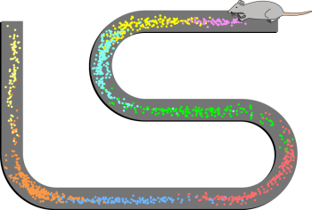
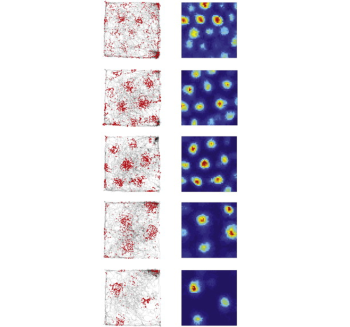

8.4: Special Types of Neurons
A memory is distributed across several different parts of the brain. However, a few special types of neurons mainly in the medial temporal lobe contribute to highly specific types of memories.
Place Cells
Place cells are a special population of pyramidal cells of the hippocampus (Figure 11). These neurons increase their firing rates when the animal occupies a specific location in its environment. Figure 11 illustrates this phenomenon, showing a rat navigating a maze while its hippocampal place cells are recorded. The colored dots represent the rat’s position on the maze when each place cell fires, with each color corresponding to a unique cell. This visualization demonstrates that individual place cells consistently fire when the rat occupies a particular spatial location. The place cells, when firing at the right times, help the animal create a spatial map of their surroundings.
Interestingly, these spatial maps are consolidated during sleep. When the rat sleeps after learning to run a particular maze during the day, their place cells fire in a sequence consistent with the spatial layout of the maze (even though they are not moving to these locations while asleep). This suggests that they are “replaying” their experience during sleep to learn and consolidate the spatial memory (Klinzing et al., 2019; see section on memory reactivation during sleep).

Grid Cells
Grid cells are located in the entorhinal cortex, the main input structure to the hippocampus. Closely related to the place cells, grid cells increase their firing periodically when an animal is at an intersection of a “grid” in a wide-open, previously-explored environment. The grid itself is roughly hexagonal and spans the whole environment an animal is in (Figure 12). The overlap of multiple grids gives the animal an idea of the surroundings. The scientific description of place cells and grid cells earned three scientists, Edvard Moser, May-Britt Moser, and John O’Keefe, a Nobel Prize in Physiology or Medicine in 2014.

Text Attributions
Parts of this section were adapted from:
Hedges, V. (2022). Memory Systems. In Introduction to Neuroscience. CC BY-NC-SA 4.0 https://openbooks.lib.msu.edu/introneuroscience1/chapter/memory-systems/
Lim, A., & Graykowski, D. (2021). Learning and Memory. In Open Neuroscience Initiative. CC BY-NC 4.0 https://static1.squarespace.com/static/56555dbee4b0f0c1a002808a/t/60537c185d98a2151537dbba/1616084000764/Open+Neuroscience+Initiative+-+Chapter+13+-+Learning+and+Memory.pdf
Media Attributions
- Place Cell spiking activity © Stuartlayton adapted by Valerie Hedges is licensed under a CC BY-SA (Attribution ShareAlike) license
- Grid cells © Lisa M. Giocomo, May-Britt Moser, Edvard I. Moser adapted by Valerie Hedges is licensed under a CC BY (Attribution) license


Specialized cells in the hippocampus that code specific locations in an environment. Important for establishing cognitive maps of different environments
Specialized cells in the entorhinal cortex that fire at consistent intervals as an animal moves through space. Important for establishing cognitive maps of different environments.